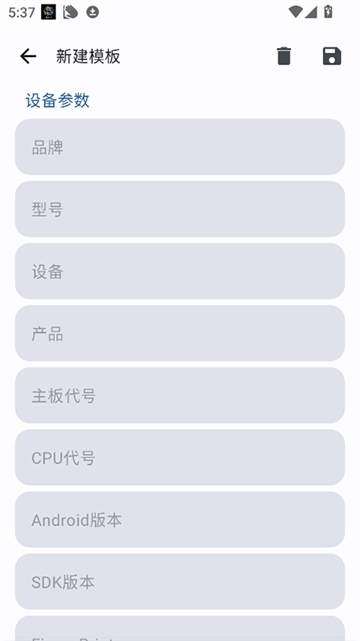
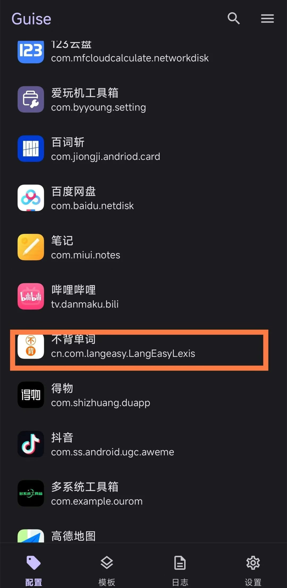

Guise 改机踩过的四个坑——从 Build 层到属性层的血泪教训
Guise 看着是个简单的改机模块，实则有几个容易忽视的细节：Java 层与属性层不同步、IMEI Luhn 校验缺失、Android ID 跨签名共享、配置改完忘了重启。本文结合实际排查经验，逐个拆解症状、原因与解法，最后一份防坑清单速查。
前阵子折腾改机，去Guise官网逛了一圈才发现，Guise 作为一个通用的 Android 设备参数伪装模块，看上去功能很直观——勾选应用、填参数、保存，完事。但我第一次用的时候差点放弃：明明改了 Build.MODEL，某银行 App 还是把我识别成老设备；IMEI 随机生成后被一些应用直接判了无效；甚至有一次 Android ID 改了之后，多个账号被认为是同一个设备。
这些不是 Bug，是设计上的分层和边界没摸透。Guise 同时 Hook 了 Java Build 层、SystemProperties 属性层、电话 API、标识符通道四条通道，每条通道各自的覆盖范围和注意事项不同。下面把我踩过的四个坑逐个说清楚。
坑一：只改了 Java Build 层，SystemProperties 层漏了
症状：你在配置里把 Build.MODEL 改成了 Pixel 7，打开一些应用能看到 Pixel 7，但另一些应用或完整性检查 SDK 却把你识别成真机 Redmi，甚至标记为可疑设备。
原因：这是改机模块最常见的「半残」状态。很多开发者以为 Hook 了 Java 的 Build.* 类就完事了，但实际上有相当数量的应用和安全 SDK 根本不走 Java 层，而是直接读取系统属性 ro.product.model。Java 层和属性层是两个独立的读取入口：
- 应用 A 用
Build.MODEL读 → 看到你伪装的值 ✅ - 应用 B 用
SystemProperties.get("ro.product.model")读 → 看到真机值 ❌ - 完整性检查 SDK 两边都读 → 发现矛盾 → 标记可疑 ❌
Guise 一次性覆盖了 23 个 ro.* 开头的构建属性，包括品牌、型号、设备代号、指纹、版本号等。但如果你手动改了某一项、或者某个字段的 Hook 意外没加载，就会出现这种两层不同步的情况。
解法：第一，不要只挑着改，整组字段一起改——品牌、制造商、型号、指纹、版本号这几项通常是联动的，单独改一个反而更容易出矛盾。第二，保存配置后用 Guise Test 靶应用快速验证，三源交叉哈希能直观告诉你哪些通道跟上了、哪些没跟上。

坑二：IMEI 随机生成后被判定无效
症状：一键随机了 IMEI，某些应用一读就说「设备标识无效」或者干脆跳过了 IMEI 校验环节（说明它拿到假的就放弃了）。
原因：IMEI 的最后一位是 Luhn 校验位，不是随便填的数字。传统的改机工具经常忽略这一点，直接让用户填 15 位数字或者纯随机生成，结果校验位不对——应用一算就知道是假的。这就像身份证号最后一位校验码错了，输入再完整也会被系统拒绝。
Guise 内置了 Luhn 合成算法：你填前 14 位（或者一键随机前 14 位），它自动计算第 15 位校验位，返回完整的、校验正确的 IMEI。但如果你手动硬改了第 15 位、或者从别处拷了一个 IMEI 没算校验，照样会出问题。
另外双卡设备上还有个细节：当前配置是单值，getImei(0) 和 getImei(1) 返回的是同一个 IMEI，界面会有说明但你可能没注意。某些双卡感知强的应用可能会觉得两个卡槽返回一样的值有点奇怪——不过这个目前还在接受范围内，真要区分两槽得等后续版本。
解法：安装包从官方下载拿，装好后永远只用一键随机生成的 IMEI，或者自己填前 14 位让 Guise 补最后一位。不要全手填 15 位，算错一个数字就白折腾。
坑三：Android ID 改了之后，多个账号被认为来自同一设备
症状：你给应用 A 和应用 B 分别配了不同的 Android ID，但登录后发现它们还是共享设备画像，甚至触发了风控关联。
原因：Android 10 引入了 SSAID（Scoped Storage App ID）机制，按应用签名隔离 Android ID——同一开发者账号下签名的多个应用，读到的是同一个 SSAID。这意味着如果你只给每个应用单独配了 Android ID，但它们属于同一个签名组，Guise 会按组返回同一个值。
还有一种情况是 WebView 独立进程。有些应用内部嵌了 WebView，WebView 有独立的 Android ID 读取入口。Guise 已经覆盖了独立进程的读取，但如果你发现主进程和 WebView 进程返回的值不一致，说明某个入口漏了，得去Guise文档里查一下当前版本的覆盖范围。
另外，Android ID 改变本身就是个大动作——目标应用会认为这是一台「新设备」，之前登录的账号状态可能直接失效，首次启动会走新用户引导。这个不是 Bug，是行为预期，改之前要有心理准备。
解法：跨签名组的应用才需要各配各的 Android ID；同一开发者账号下的应用，Android ID 会自动保持一致，这是 SSAID 的设计，不用纠结。改完 Android ID 后如果应用状态变了，别慌——清除应用数据后重新登录就行。
坑四：改完配置忘了重启目标应用
症状：保存了新配置，打开目标应用一看——参数还是旧的，好像什么都没改。反复保存、反复确认配置在，就是不生效。
原因：Xposed 模块的 Hook 代码是在目标应用进程启动时注入的。进程一旦启动并加载了某个模块的 Hook，运行期间无法动态卸载或重新加载。所以：
- 首次勾选应用 → 需要重启目标应用，让进程带着新 Hook 启动
- 取消勾选应用 → 需要重启目标应用，让进程不再加载 Hook
- 修改任何配置 → 需要重启目标应用，让新配置生效
我第一次改完配置直接切回目标应用，它还在后台活着呢，Hook 状态当然没变。以为模块坏了，差点卸载重装。
解法：Guise 保存配置后，如果检测到目标应用正在运行，会主动问你「是否停止并重启该应用以使修改生效」。这个提示别跳过。进程控制有三级回退——有 Root 直接操作、没有 Root 就走 Xposed service、再不行引导手动强制停止。如果应用当前没在运行，下次手动打开时就自动带新配置启动，不用特意重启整个手机。

防坑清单（速查）
最后整理几条要点，每次配置完对照过一遍：
- ✅ Java 层 + 属性层一起改：品牌、型号、指纹、版本号整组联动，不要只改单个字段
- ✅ IMEI 只用一键随机或前 14 位自动补校验：Luhn 位算错 = 直接裸奔
- ✅ Android 10+ 注意 SSAID 签名隔离：同一开发者账号下的应用共享 Android ID，不用各配各的
- ✅ 改完必重启目标应用：Xposed Hook 是进程启动时注入的，运行中改配置不会生效
- ✅ 定期用 Guise Test 验三通道：Build 层、属性层、电话 API 一起测，交叉哈希一眼看出哪里漏了
知道这些坑之后，Guise 其实相当省心。它把你能踩到的大多数细节都提前兜住了——双通道 Hook、Luhn 合成算法、独立进程覆盖、重启提醒——只是这些设计藏在分层里，不踩一次坑真不知道。对了，这套改机相关的资料我分别同步到了GitHub、Gitee和GitCode三个仓库，怕哪天某一边挂了还能从别的地方捞到。